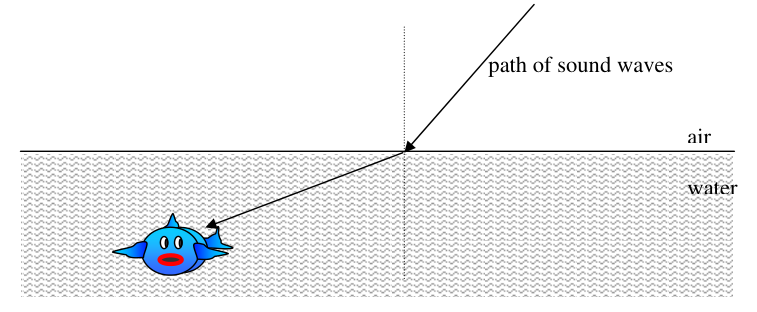
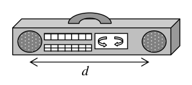

Question 1. A girl throws a teddy bear straight up. Consider the motion of the bear only after it has left the girl’s hand but before it touches the ground, and assume that forces exerted by the air are negligible. For these conditions, the force(s) acting on the bear is (are): (A) a downward force of gravity along with a steadily decreasing upward force. (B) a steadily decreasing upward force from the moment it leaves the girl’s hand until it reaches its highest point; on the way down there is a steadily increasing downward force of gravity as the bear gets closer to the earth.
(C) an almost constant downward force of gravity along with an upward force that steadily decreases until the bear reaches its highest point; on the way down there is only a constant downward force of gravity. (D) an almost constant downward force of gravity only. (E) none of the above. The bear falls back to the ground because of its natural tendency to rest on the surface of the earth.
Topic: Newtonian Mechanics Metodi: Free-Body Diagram, Physical Modeling Competenze: Physical Reasoning Objects: Projectile Fonte: Testo (PDF) — p.2
Domanda 1. Una ragazza lancia un orso da peluche dritto in su. Considerate solo il movimento dell’orso dopo aver lasciato la mano della ragazza, ma prima di toccare il terreno, e supponiamo che Le forze esercitate dall’aria sono trascurabili. Per queste condizioni, la forza agiscono sull’orso è (sono): (A) una forza gravitazionale in discesa con una forza gravitazionale in continua diminuzione forza verso l’alto. (B) una forza ascendente che diminuisce costantemente dal momento in cui lascia il La mano della ragazza finché non raggiunge il punto più alto; è una forza di gravità che aumenta costantemente verso il basso mentre l’orso si più vicino alla terra.
(C) una forza gravitazionale in discesa quasi costante insieme ad una forza ascendente che diminuisce fino a quando l’orso raggiunge il suo punto più alto; sulla strada verso il basso c’è solo un forza di gravità costante verso il basso. D) una forza gravitazionale in discesa quasi costante. (E) nessuna delle disposizioni di cui sopra. L’orso cade di nuovo a terra a causa della sua naturale tendenza a riposo sulla superficie della terra.
Topic: Newtonian Mechanics Metodi: Free-Body Diagram, Physical Modeling Competenze: Physical Reasoning Objects: Projectile Fonte: Testo (PDF) — p.2
Question 2. A school bus breaks down and receives a push back to the garage from a small compact car as shown in the diagram.
While the car, still pushing the bus, is speeding up to get up to cruising speed: (A) the amount of force with which the car pushes against the bus is equal to that with which the bus pushes back against the car. (B) the amount of force with which the car pushes against the bus is smaller than that with which the bus pushes back against the car. (C) the amount of force with which the car pushes against the bus is greater than that with which the bus pushes back against the car. (D) the car’s engine is running so the car pushes against the bus, but the bus’s engine is not running so the bus can’t push back against the car. The bus is pushed forward simply because it is in the way of the car. (E) neither the car nor the bus exert any force on the other. The bus is pushed forward simply because it is in the way of the car. Australian Science Olympiads
2007 Physics National Qualifying Examination
Page 3
Topic: Newtonian Mechanics Metodi: Free-Body Diagram, Physical Modeling Competenze: Physical Reasoning Objects: — Fonte: Testo (PDF) — p.2
Domanda 2. Un autobus scolastico si rompe e riceve un respiro al garage da una piccola auto compatta come il diagramma.
Mentre l’auto, che spinge ancora l’autobus, si sta accelerando per raggiungere la velocità di crociera: (A) la forza con cui l’auto spinge contro l’autobus è pari a quella con cui che l’autobus spinge indietro contro l’auto. b) la forza con cui l’auto spinge contro l’autobus è inferiore a quella con cui che l’autobus spinge indietro contro l’auto. (C) la forza con cui l’auto spinge contro l’autobus è superiore a quella con cui che l’autobus spinge indietro contro l’auto. (D) il motore dell’automobile è in funzione, quindi l’automobile spinge contro l’autobus, ma il motore dell’autobus non è Correrà così che l’autobus non possa spingere contro l’auto. L’autobus viene spinto avanti semplicemente Perche’ sta in mezzo alla macchina. (E) né l’auto né l’autobus esercitano alcuna forza l’uno sull’altro. L’ autobus è spinto in avanti . semplicemente perché è in mezzo all’auto. Olimpiadi scientifici australiani
2007 Fisica esame nazionale di qualifica
Pagina 3
Topic: Newtonian Mechanics Metodi: Free-Body Diagram, Physical Modeling Competenze: Physical Reasoning Objects: — Fonte: Testo (PDF) — p.2
Question 3. A school bus breaks down and receives a push back to the garage from a small compact car as shown in the diagram.
After the car reaches the constant cruising speed at which the driver wishes to push the bus; (A) the amount of force with which the car pushes against the bus is equal to that with which the bus pushes back against the car. (B) the amount of force with which the car pushes against the bus is less than that with which the bus pushes back against the car. (C) the amount of force with which the car pushes against the bus is greater than that with which the bus pushes back against the car. (D) the car’s engine is running so the car pushes against the bus, but the bus’s engine is not running so the bus can’t push back against the car. The bus is pushed forward simply because it is in the way of the car. (E) neither the car nor the bus exert any force on the other. The bus is pushed forward simply because it is in the way of the car.
Topic: Newtonian Mechanics Metodi: Free-Body Diagram, Physical Modeling Competenze: Physical Reasoning Objects: — Fonte: Testo (PDF) — p.3
Domanda 3. Un autobus scolastico si rompe e riceve un respiro al garage da una piccola auto compatta come il diagramma.
Dopo che l’auto raggiunge la velocità di crociera costante a cui il conducente desidera spingere l’autobus; (A) la forza con cui l’auto spinge contro l’autobus è pari a quella con cui che l’autobus spinge indietro contro l’auto. b) la forza con cui l’auto spinge contro l’autobus è inferiore a quella con cui che l’autobus spinge indietro contro l’auto. (C) la forza con cui l’auto spinge contro l’autobus è superiore a quella con cui che l’autobus spinge indietro contro l’auto. (D) il motore dell’automobile è in funzione, quindi l’automobile spinge contro l’autobus, ma il motore dell’autobus non è Correrà così che l’autobus non possa spingere contro l’auto. L’autobus viene spinto avanti semplicemente Perche’ sta in mezzo alla macchina. (E) né l’auto né l’autobus esercitano alcuna forza l’uno sull’altro. L’ autobus è spinto in avanti semplicemente perché è in mezzo all’auto.
Topic: Newtonian Mechanics Metodi: Free-Body Diagram, Physical Modeling Competenze: Physical Reasoning Objects: — Fonte: Testo (PDF) — p.3
Question 4. A large bus and a small car collide and stick together. Which one undergoes the larger change in momentum?
- A. The car.
- B. The bus.
- C. The momentum change is the same for both vehicles.
- D. You can’t tell without knowing the final velocity of the combined masses.
- E. The result depends on the energy absorbed by the crumpling bodies of the vehicles on impact.
Topic: Conservation of Momentum, Newtonian Mechanics Metodi: Impulse-Momentum Theorem, Conservation Laws Competenze: Physical Reasoning Objects: — Fonte: Testo (PDF) — p.3
Domanda 4. Un autobus grande e una piccola auto si scontrano e si attaccano. Qual è il cambiamento più grande in
-
Impulso?
-
**A ** L’auto.
-
B. L’autobus.
-
C. Il cambiamento di impulso è lo stesso per entrambi i veicoli.
-
D. Non si può dire senza conoscere la velocità finale delle masse combinate.
-
E. Il risultato dipende dall’energia assorbita dai corpi di crompazione dei veicoli su l’impatto.
Topic: Conservation of Momentum, Newtonian Mechanics Metodi: Impulse-Momentum Theorem, Conservation Laws Competenze: Physical Reasoning Objects: — Fonte: Testo (PDF) — p.3
Question 5. A woman is standing on a set of bathroom scales, measuring her weight, in an elevator. Her weight as shown on the scales is W before the elevator starts to move. She presses the down button. As the elevator starts to go down, the weight shown on the scales is:
- A. More than W
- B. Equal to W
- C. Less than W
- D. You can’t tell without knowing the velocity the lift is moving at
- E. You can’t tell without knowing the acceleration of the lift Australian Science Olympiads
2007 Physics National Qualifying Examination
Page 4
Topic: Newtonian Mechanics Metodi: Free-Body Diagram, Kinematic Equations Competenze: Physical Reasoning Objects: — Fonte: Testo (PDF) — p.3
Domanda numero 5. Una donna sta in piedi su una serie di scale del bagno, misurando il suo peso, in un ascensore. Il suo peso come mostrato sulle scale è W prima che l’ascensore inizi a muoversi. Preme il pulsante in basso. Come il l’ascensore inizia a scendere, il peso mostrato sulle scale è:
- A. Più di W
- B. Equa a W
- C. Menore di W
- D. Non si può dire senza sapere la velocità con cui si muove l’ascensore
- E. Non si può dire senza sapere l’accelerazione dell’ascensore Olimpiadi australiani di scienza
2007 Fisica esame nazionale di qualifica
Pagina 4
Topic: Newtonian Mechanics Metodi: Free-Body Diagram, Kinematic Equations Competenze: Physical Reasoning Objects: — Fonte: Testo (PDF) — p.3
Question 6. A woman is standing on a set of bathroom scales, measuring her weight, in an elevator. Her weight as shown on the scales is W before the elevator starts to move. She presses the down button. When the lift is moving down at a constant speed, the weight shown on the scales is:
- A. More than W
- B. Equal to W
- C. Less than W
- D. You can’t tell without knowing the velocity the lift is moving at
- E. You can’t tell without knowing the acceleration of the lift
Topic: Newtonian Mechanics Metodi: Free-Body Diagram, Kinematic Equations Competenze: Physical Reasoning Objects: — Fonte: Testo (PDF) — p.4
Domanda 6. Una donna sta in piedi su una serie di scale del bagno, misurando il suo peso, in un ascensore. Il suo peso come mostrato sulle scale è W prima che l’ascensore inizi a muoversi. Preme il pulsante in basso. Quando se l’ascensore si sta muovendo a velocità costante, il peso indicato sulle scale è:
- A. Più di W
- B. Equa a W
- C. Menore di W
- D. Non si può dire senza sapere la velocità con cui si muove l’ascensore
- E. Non si può dire senza sapere l’accelerazione dell’ascensore
Topic: Newtonian Mechanics Metodi: Free-Body Diagram, Kinematic Equations Competenze: Physical Reasoning Objects: — Fonte: Testo (PDF) — p.4
Question 7. A boy is swinging a ball attached to a string around in a horizontal circle with constant speed. Consider the following forces: I. a gravitational force downwards II. a force directed towards the boy at the centre of the circle III. a force in the direction of motion of the ball IV. a force directed outwards away from the boy at the centre of the circle Which of the above forces is (are) acting on the ball?
- A. I only.
- B. I and II.
- C. I and III.
- D. I, II, and III.
- E. I, III, and IV.
Topic: Newtonian Mechanics Metodi: Free-Body Diagram, Vector Decomposition Competenze: Physical Reasoning, Diagrammatic Reasoning Objects: Ball, String Fonte: Testo (PDF) — p.4
Domanda 7. Un ragazzo sta svingendo una palla attaccata a una corda in un cerchio orizzontale con velocità costante. Considerate le seguenti forze: I. una forza gravitazionale verso il basso II. una forza diretta verso il ragazzo al centro del cerchio III. Il una forza nella direzione del movimento della palla IV. una forza diretta verso l’esterno lontano dal ragazzo al centro del cerchio Quale delle forze sopra indicate agisce sulla palla?
- **A ** Solo io.
- B. I e II.
- C. I e III.
- D. I, II e III.
- E. I, III e IV.
Topic: Newtonian Mechanics Metodi: Free-Body Diagram, Vector Decomposition Competenze: Physical Reasoning, Diagrammatic Reasoning Objects: Ball, String Fonte: Testo (PDF) — p.4
Question 8. A boy is swinging a ball attached to a string around in a horizontal circle with constant speed. Consider the following forces: I. a gravitational force downwards II. a force directed towards the boy at the centre of the circle III. a force in the direction of motion of the ball IV. a force directed outwards away from the boy at the centre of the circle Which of the above forces does work on the ball?
- A. I and II.
- B. II only.
- C. I, II, and III.
- D. I, III, and IV.
- E. none of these forces does work on the ball. Australian Science Olympiads
2007 Physics National Qualifying Examination
Page 5
Topic: Newtonian Mechanics, Conservation of Energy Metodi: Free-Body Diagram, Energy Conservation Method Competenze: Physical Reasoning Objects: Ball, String Fonte: Testo (PDF) — p.4
Domanda 8. Un ragazzo sta svingendo una palla attaccata a una corda in un cerchio orizzontale con velocità costante. Considerate le seguenti forze: I. una forza gravitazionale verso il basso II. una forza diretta verso il ragazzo al centro del cerchio III. Il una forza nella direzione del movimento della palla IV. una forza diretta verso l’esterno lontano dal ragazzo al centro del cerchio Quale delle forze sopra ha effetto sulla palla?
- A. I e II.
- solo B. II.
- C. I, II e III.
- D. I, III e IV. Nessuna di queste forze funziona sulla palla. Olimpiadi australiani di scienza
2007 Fisica esame nazionale di qualifica
Pagina 5
Topic: Newtonian Mechanics, Conservation of Energy Metodi: Free-Body Diagram, Energy Conservation Method Competenze: Physical Reasoning Objects: Ball, String Fonte: Testo (PDF) — p.4
Question 9. The speed of light in vacuum, , depends on two fundamental constants, the permeability of free space, , and the permittivity of free space, . The speed of light is given by . The units of are . The units for are:
- A.
- B.
- C.
- D. (E)
Topic: Electromagnetism Metodi: Dimensional Analysis, Physical Modeling Competenze: Physical Reasoning, Unit Conversion Objects: — Fonte: Testo (PDF) — p.5
Domanda 9. La velocità della luce al vuoto, , dipende da due costanti fondamentali, la permeabilità di spazio, , e la permissività dello spazio libero, . La velocità della luce è data da . Il le unità di sono . Le unità per sono:
- A.
- B.
- C.
- D. (E)
Topic: Electromagnetism Metodi: Dimensional Analysis, Physical Modeling Competenze: Physical Reasoning, Unit Conversion Objects: — Fonte: Testo (PDF) — p.5
Question 10. Some factories use dust precipitators in their chimneys to remove airborne pollutants. In one such precipitator a pair of plates is placed in the square chimney with a potential difference of 2 kV between them as shown.
Consider a particle with a small negative charge at rest at one of the three positions, A, O and B, marked on the diagram. The particle will:
- A. have greatest potential energy at A.
- B. have greatest potential energy at B.
- C. have greatest potential energy at O
- D. have the same potential energy at A and B
- E. have the same potential energy at A, B and O.
2 kV O B A Australian Science Olympiads
2007 Physics National Qualifying Examination
Page 6
SECTION B
Written Answer Questions Attempt ONLY 4 questions. ONLY 4 questions will be marked.
Read each question completely. You may be able to do later parts of a question even if you cannot do the early parts! Remember that no answer can only get no marks, so even if you are unsure, have a go!
The marks for each question part are given, each question is worth a total of 10 marks.
Topic: Electrostatics Metodi: Electric Potential Method Competenze: Physical Reasoning, Diagrammatic Reasoning Objects: Capacitor, Point Charge Fonte: Testo (PDF) — p.5
Domanda 10. Alcune fabbriche usano precipitatori di polvere nelle loro cheminate per rimuovere gli inquinanti dell’aria. In una di queste precipitatore un paio di piastre è collocato nella camina quadrata con una differenza potenziale di 2 kV tra di loro come mostrato.
Considera una particella con una piccola carica negativa a riposo in una delle tre posizioni, A, O e B, segnalato sul diagramma. La particella:
- A. hanno la maggiore energia potenziale a A.
- ** B.** hanno la maggiore energia potenziale a B.
- C. hanno la maggiore energia potenziale a O
- D. hanno la stessa energia potenziale a A e B
- E. hanno la stessa energia potenziale a A, B e O.
2 kV O B A Olimpiadi australiani di scienza
2007 Fisica esame nazionale di qualifica
Pagina 6
SEZIONE B
Risposte scritte Prova a fare solo 4 domande. Solo 4 domande saranno contrassegnate.
Leggi tutte le domande. Potresti essere in grado di fare le parti successive di una domanda anche se non puoi fare le parti iniziali! Ricordate che nessuna risposta può solo non ottenere punti, quindi anche se non siete sicuri, provate!
I voti per ogni parte delle domande sono dati, ogni domanda vale un totale di 10 voti.
Topic: Electrostatics Metodi: Electric Potential Method Competenze: Physical Reasoning, Diagrammatic Reasoning Objects: Capacitor, Point Charge Fonte: Testo (PDF) — p.5
Question 11.
Graham has gone fishing, and is sitting quietly waiting for a fish to bite, but nothing is happening. So Graham turns on the radio to try to find some music to encourage the fish. The first piece of music Graham finds is a bass guitar solo, which has a very low frequency. Graham doesn’t like the sound of that, so he finds another station which is playing a selection of soprano duets, which are much higher frequency.
a. Which music will travel from the radio to the fish faster, and why? (1 mark)
The path of the sound bends when it reaches the surface of the water, as shown.
b. Describe and explain what happens to the frequency, the wavelength and the speed of the sound when it moves from the air to the water. (2 marks)
Graham’s radio has 2 speakers, separated by a distance d as shown.
water air path of sound waves d Australian Science Olympiads
2007 Physics National Qualifying Examination
Page 7 Question 11 continued
c. Draw a diagram showing where there will be constructive interference between the sound from the two speakers when the first station (the one with the bass guitar solo) is playing. Make sure you label your diagram carefully. Consider only the interference pattern in air. (3 marks)
d. How does the interference pattern change when Graham changes to the second station (the one playing soprano duets)? (1 mark)
e. For a given wavelength of sound from the speakers, what must be the minimum separation, d, in terms of the wavelength , for complete destructive interference to occur? Why? (1 mark)
Graham leans over the water to try to see some fish, and accidentally drops his radio in. The radio keeps playing under the water.
f. How would the interference pattern from part (c) change with the radio under the water? Why? (2 marks) Australian Science Olympiads
2007 Physics National Qualifying Examination
Page 8

rifrazione suono aria-acqua con pesce
radio con due altoparlanti distanza dTopic: Oscillations & Waves, Wave Optics Metodi: Wave Equation, Superposition Principle, Snell’s Law Competenze: Physical Reasoning, Mathematical Modeling, Diagrammatic Reasoning Objects: — Fonte: Testo (PDF) — p.6
Domanda 11.
Graham è andato a pescare, e sta seduto in silenzio aspettando che un pesce morda, ma non sta accadendo nulla. Quindi Graham accende la radio per cercare di trovare musica per incoraggiare i pesci. Il primo pezzo di Graham trova una musica basso-guitarra solo, che ha una frequenza molto bassa. Graham non ama la Il suono di questo, quindi trova un’altra stazione che sta suonando una selezione di duetti soprano, che sono frequenza molto più alta.
a. Quale musica trasmetterà più velocemente dalla radio ai pesci, e perché? 1 punto
Il percorso del suono si piega quando raggiunge la superficie dell’acqua, come mostrato.
b. Descrivere e spiegare cosa accade alla frequenza, alla lunghezza d’onda e alla velocità della il suono quando si muove dall’aria all’acqua. 2 punti)
La radio di Graham ha 2 altoparlanti, separati da una distanza d come mostrato.
acqua aria percorso delle onde sonore d Olimpiadi australiani di scienza
2007 Fisica esame nazionale di qualifica
Pagina 7 La domanda 11 continua
c. Disegnare un diagramma che mostra dove ci sarà un’interferenza costruttiva tra il suono da parte dei due altoparlanti quando si suona la prima stazione (la con solista di chitarra bassa). Assicurati di etichettare attentamente il tuo diagramma. Considerate solo il modello di interferenza nell’aria. (3 (Marchi)
d. Come cambia il modello di interferenza quando Graham passa alla seconda stazione (la uno che suona duetti soprano)? 1 punto
e. Per una data lunghezza d’onda del suono dagli altoparlanti, quale deve essere la separazione minima, d, in termini di lunghezza d’onda , per conseguire un’interferenza distruttiva completa? - Perché? - Perché? (1 (marchio)
Graham si penza sull’acqua per cercare di vedere dei pesci, e accidentalmente lascia cadere la radio. La radio continua a giocare sotto l’acqua.
f. Come cambierebbe il modello di interferenza della parte (c) con la radio sott’acqua?
- Perché? - Perché? 2 punti) Olimpiadi scientifici australiani
2007 Fisica esame nazionale di qualifica
Pagina 8
Rifrazione suono aria-acqua con pesce
- radio con dovuta distanza altoparlanti d *
Topic: Oscillations & Waves, Wave Optics Metodi: Wave Equation, Superposition Principle, Snell’s Law Competenze: Physical Reasoning, Mathematical Modeling, Diagrammatic Reasoning Objects: — Fonte: Testo (PDF) — p.6
Question 12.
Molly the ant falls from a height above a conveyor belt which is moving at a constant, very high, velocity , and she bounces off at an angle to the horizontal. Molly has a mass and the coefficient of kinetic friction between Molly and the belt is .
a. Find an expression for the velocity with which Molly hits the conveyor belt. (1 mark)
b. Draw a diagram showing all the forces acting on Molly during her collision with the conveyor belt. Indicate on your diagram the relative sizes of the forces in the vertical direction. (2 marks)
Impulse, , is the change in momentum, , of an object caused by a force, , and is equal to the average force multiplied by the time, , over which it acts. Hence .
c. Write down an expression for the change in momentum of Molly in the horizontal and vertical directions in terms of the forces on your diagram and the time the collision takes, . (2 marks)
d. Find expressions for Molly’s final velocity in the horizontal and vertical directions. (2 marks)
e. If the average size of the normal force that Molly experiences during the collision is equal to , find an expression for the time the collision takes, . (3 marks) Australian Science Olympiads
2007 Physics National Qualifying Examination
Page 9
Topic: Newtonian Mechanics, Conservation of Momentum Metodi: Free-Body Diagram, Impulse-Momentum Theorem, Kinematic Equations, Vector Decomposition Competenze: Diagrammatic Reasoning, Mathematical Modeling, Physical Reasoning Objects: — Fonte: Testo (PDF) — p.8
Domanda 12.
Molly la formica cade da un’altezza sopra una cintura trasportatrice che si muove a una costante, molto alta, La velocità , e rimbalza ad un angolo verso l’orizzontale. Molly ha una massa e la massa il coefficiente di attrito cinetico tra Molly e la cintura è .
a. Trova un’espressione per la velocità con cui Molly colpisce la cintura trasportatrice. 1 punto
b. Disegna un diagramma che mostra tutte le forze che agiscono su Molly durante la collisione con il cintura di trasporto. Indicare sul diagramma le dimensioni relative delle forze verticali direzione. 2 punti)
Impulso, , è il cambiamento di impulso, , di un oggetto causato da una forza, , ed è uguale alla forza media moltiplicata per il tempo, , su cui agisce. Di conseguenza .
c. Scrivi un’espressione per il cambiamento di impulso di Molly nell’orizzontale e direzioni verticali in termini di forze sul diagramma e di tempo necessario per la collisione, . 2 punti)
d. Trova espressioni per la velocità finale di Molly nelle direzioni orizzontale e verticale. (2 (Marchi)
e. Se la dimensione media della forza normale che Molly prova durante la collisione è uguale a , trovare un’espressione per il tempo necessario per la collisione, . (3 punti) Olimpiadi scientifici australiani
2007 Fisica esame nazionale di qualifica
Pagina 9
Topic: Newtonian Mechanics, Conservation of Momentum Metodi: Free-Body Diagram, Impulse-Momentum Theorem, Kinematic Equations, Vector Decomposition Competenze: Diagrammatic Reasoning, Mathematical Modeling, Physical Reasoning Objects: — Fonte: Testo (PDF) — p.8
Question 13.
In any collision the sum of the momenta of all the bodies involved should be the same immediately before and after the collision. In an elastic collision the same is true for the sum of the kinetic energies of the bodies.
a. If a small blob with a small mass m has a velocity v directly towards an extremely heavy wall, and the ensuing collision is elastic, what is the approximate final velocity of the blob? (1 mark)
There is a box with lots and lots and lots of these blobs with mass m, all moving with different speeds in different directions so that the total momentum is initially (approximately) zero. The box is held firmly in place. Assume that all collisions are elastic.
b. What happens to the total kinetic energy of all the blobs? Why? (2 marks)
c. What happens to the total momentum of the all the blobs? Why? (2 marks)
If there were a hole in the side of the box that the blobs could escape through and the initial distribution of velocities of the blobs were the same as before:
d. What happens to the total kinetic energy of the blobs left in the box? Why? (1 mark)
e. What happens to the total momentum of the blobs left in the box? Why? (2 marks)
When a blown up balloon is released before it is tied up it shoots off away from the hand of the person holding it.
f. Why does the balloon shoot off in the direction that it does? (2 marks) Australian Science Olympiads
2007 Physics National Qualifying Examination
Page 10
Topic: Conservation of Momentum, Conservation of Energy Metodi: Conservation Laws, Impulse-Momentum Theorem, Energy Conservation Method Competenze: Physical Reasoning, Mathematical Modeling Objects: — Fonte: Testo (PDF) — p.9
Domanda 13.
In ogni collisione la somma dei momenti di tutti gli organi coinvolti deve essere immediatamente uguale. prima e dopo la collisione. In una collisione elastica lo stesso vale per la somma della le energie dei corpi.
a. Se una piccola macchia con una piccola massa m ha una velocità v direttamente verso un la parete, e la collisione che ne consegue è elastica, qual è la velocità finale approssimativa della macchia? 1 punto
C’è una scatola con molti e molti e molti di questi macchie con massa m, tutti in movimento con diversi velocità in direzioni diverse in modo che il momento totale sia inizialmente (circa) zero. La scatola è tenuto saldamente in posizione. Supponiamo che tutte le collisioni siano elastiche.
b. Che succede all’energia cinetica totale di tutte le macchie? - Perché? - Perché? 2 punti)
c. Che succede al totale della dinamica di tutte le macchie? - Perché? - Perché? 2 punti)
Se c’era un buco nel lato della scatola che le macchie potevano sfuggire attraverso e l’inizio La distribuzione delle velocità dei petti è stata la stessa di prima:
d. Che succede all’energia cinetica totale delle macchie lasciate nella scatola? - Perché? - Perché? 1 punto
e. Che succede al totale della dinamica dei macchie lasciate nella scatola? - Perché? - Perché? 2 punti)
Quando un pallone esploso viene rilasciato prima di essere legato, spara lontano dalla mano del persona che lo tiene.
f. Perché il palloncino spara nella direzione in cui spara? 2 punti) Olimpiadi scientifici australiani
2007 Fisica esame nazionale di qualifica
Pagina 10
Topic: Conservation of Momentum, Conservation of Energy Metodi: Conservation Laws, Impulse-Momentum Theorem, Energy Conservation Method Competenze: Physical Reasoning, Mathematical Modeling Objects: — Fonte: Testo (PDF) — p.9
Question 14.
Newton’s law of cooling says that the rate of cooling of an object is proportional to the temperature difference between the object and its environment; hence a cup of tea cools off faster in a cold room than in a warm room. The equation that describes the temperature as a function of time is:
where is the temperature of the tea at any time , is the temperature of the room, is the initial temperature of the tea at and is a constant.
a. What are the units of the constant ? (1 mark)
A particular cup of tea is made in a room at . The temperature of the tea is measured as a function of time and the results are shown in the table below.
(minutes) 10 20 30 40 50 60 70 80 (C) 65 49 38 30 25 22 20 18
b. Plot an appropriate graph on the graph paper provided that will allow you to find the constant k using the table of data given above. (5 marks)
Note that a straight line graph has the form where is the gradient and is the intercept, and and are functions of the data.
c. Find the constant . Remember to show all your working. (2 marks)
d. What was the initial temperature of the tea? (1 mark)
e. How long will it take for the tea to reach a cold ? (1 mark) Australian Science Olympiads
2007 Physics National Qualifying Examination
Page 11
Topic: Thermodynamics Metodi: Graph Linearization, Experimental Data Analysis, Approximation & Series Expansion Competenze: Graph Linearization, Experimental Data Analysis, Mathematical Modeling Objects: — Fonte: Testo (PDF) — p.10
Domanda 14.
La legge di Newton del raffreddamento dice che la velocità di raffreddamento di un oggetto è proporzionale alla temperatura differenza tra l’oggetto e il suo ambiente; quindi una tazza di tè si raffredda più velocemente in una stanza fredda che in una stanza calda. L’equazione che descrive la temperatura come funzione del tempo è:
se è la temperatura del tè in qualsiasi momento , è la temperatura della stanza, è la temperatura iniziale del tè a e è una costante.
a. Quali sono le unità della costante ? 1 punto
Una tazza di tè particolare viene preparata in una stanza a . La temperatura del tè è misurata come La funzione temporale e i risultati sono riportati nella tabella seguente.
(minuti) 10 20 30 40 50 60 70 80 (C) 65 49 38 30 25 22 20 18
b. Tracciare un grafico appropriato sulla carta grafica a condizione che vi permetta di trovare il k costante utilizzando la tabella di dati di cui sopra. 5 punti)
Si noti che un grafico di linea retta ha la forma dove è il gradiente e è l’intercettazione, e e sono funzioni dei dati.
c. Trova la costante . Ricordate di mostrare tutto il vostro lavoro. 2 punti)
d. Qual era la temperatura iniziale del tè? 1 punto
e. Quanto tempo ci vorrà prima che il tè raggiunga un raffreddore ? 1 punto Olimpiadi scientifici australiani
2007 Fisica esame nazionale di qualifica
Pagina 11
Topic: Thermodynamics Metodi: Graph Linearization, Experimental Data Analysis, Approximation & Series Expansion Competenze: Graph Linearization, Experimental Data Analysis, Mathematical Modeling Objects: — Fonte: Testo (PDF) — p.10
Question 15.
This question consists of three unrelated parts. Answers should be clear, concise and written in COMPLETE sentences. Answers longer than the length limits WILL NOT BE MARKED. Attempting to reduce the size of your handwriting so that you can fit more in will likely make your handwriting unreadable, in which case you will be given ZERO MARKS.
Part I. a. Is energy conserved in an inelastic collision? Why / why not? Give an example of how energy may be transferred in an inelastic collision. (Max 6 lines) (3 marks)
Part II. Electricity transmission lines do not transmit energy perfectly, there are some losses because the power lines themselves have resistance.
b. Draw a circuit diagram showing how a power station, the power lines and a single home would be connected. (1 mark)
The power dissipated by an element in a circuit is , where is the current flowing through the circuit element, and is the potential drop across the element (the potential drop would be negative for an element supplying power). For a resistor, the power dissipated can be written as or .
c. Given that the power station is providing a fixed amount of power, should the power station’s voltage output be increased or decreased (or does it not have any effect) to reduce the power losses due to the resistance of the transmission lines? Justify your answer. (Max 6 lines) (4 marks)
Part III. d. When a positron (like an electron, but with positive charge) and an electron (negative charge) collide, they annihilate and produce light. Could a neutron (no charge) and an antiproton (like a proton, but with negative charge) annihilate and produce light? Why / why not? Justify your answer. (Max 4 lines) (2 marks) Australian Science Olympiads
2007 Physics National Qualifying Examination
Page 12
Topic: Conservation of Energy, Circuits, Nuclear & Particle Physics Metodi: Conservation Laws, Kirchhoff’s Laws, Energy Conservation Method Competenze: Physical Reasoning, Diagrammatic Reasoning, Mathematical Modeling Objects: Resistor, Electron Fonte: Testo (PDF) — p.11
Domanda 15.
Questa domanda è costituita da tre parti non correlate. Le risposte devono essere chiare, concise e scritte in
- Completate le frasi. Le risposte superiori ai limiti di lunghezza non saranno segnate. Cercare di ridurre la dimensione della tua scrittura in modo da poter inserirti meglio probabilmente farà La sua scrittura non è legible, in tal caso vi verrà data la MARCA ZERO.
Parte I. a. L’energia viene conservata in una collisione inelastica? Perché non? Cita un esempio di come l’energia possono essere trasferiti in una collisione inelastica. (Max 6 righe) (3 punti)
Parte II. Le linee di trasmissione elettrica non trasmettono energia perfettamente, ci sono alcune perdite perché il Le linee elettriche hanno resistenza.
b. Disegna un diagramma di circuito che mostra come una centrale elettrica, le linee elettriche e una singola casa
- Siate collegati. 1 punto
La potenza dissipata da un elemento in un circuito è , dove è la corrente che scorre attraverso l’elemento del circuito, e è la caduta potenziale attraverso l’elemento (la caduta potenziale sarebbe negativo per un elemento di alimentazione). Per una resistenza, la potenza dissipata può essere scritta come or .
c. Considerando che la centrale elettrica fornisce una quantità fissa di energia, se la centrale elettrica la tensione di uscita è aumentata o diminuita (o non ha alcun effetto) per ridurre la potenza perdite dovute alla resistenza delle linee di trasmissione? giustifica la tua risposta. (Max 6 righe) (4 (Marchi)
Parte III. d. Quando un positron (come un elettrone, ma con carica positiva) e un elettrone (carica negativa) Collidono, annientano e producono luce. Potrebbe un neutrone (senza carica) e un antiprotone (come un
- E’ il protone che, con carica negativa, annienta e produce luce? Perché non? Giustificare il tuo Rispondi. (Max 4 righe) (2 punti) Olimpiadi australiani di scienza
2007 Fisica esame nazionale di qualifica
Pagina 12
Topic: Conservation of Energy, Circuits, Nuclear & Particle Physics Metodi: Conservation Laws, Kirchhoff’s Laws, Energy Conservation Method Competenze: Physical Reasoning, Diagrammatic Reasoning, Mathematical Modeling Objects: Resistor, Electron Fonte: Testo (PDF) — p.11
Question 16.
Hazel and Lilly decide to test the claims of compact fluorescent light bulb manufacturers in order to find out whether these devices really do save energy. To do this, they need to measure the energy used by a standard incandescent light bulb (which claims to consume energy at a rate of 100 W) in some time, and then compare this with the measured energy use of a compact fluorescent light bulb (which claims to consume energy at a rate of 18 W for the same light output) over the same time.
Being environmentally-minded, Hazel and Lilly don’t have many unnecessary devices in their home. Their only clock is a standard analogue wall clock with a second hand, and the only way that they can measure energy usage is to read their electricity meter, which can be read to a precision of kWh. The units on the meter, kWh, are kilowatt-hours; 1 kWh is the amount of energy that would be used by a device consuming 1000 W for one hour.
a. Write out a method for Hazel and Lilly to follow in their experiment that would allow them to test the power consumptions of the light bulbs. They are interested both in the relative consumption of the bulbs and the performance compared to the manufacturer’s claims. Include important details such as how, with what, for how long, etc., and detail any necessary calculations. (4 marks)
b. Explain the major sources of uncertainty in Hazel and Lilly’s experiment, and hence estimate the precision of their final results. (3 marks)
c. Suggest possible changes to this experiment that would increase the accuracy of their results, whilst using the same electricity meter. (1 mark)
It is sometimes claimed that it uses less power to leave a fluorescent light on than to switch it on and off many times during the course of the day.
d. Explain what could be done to thoroughly test this claim using the previous apparatus and general method. Think about some of the factors to do with the switching that could affect the results. (2 marks)
© Australian Science Innovations Incorporated ABN 81 731 558 309 Integrity of the Competition To ensure the integrity of the competition and to identify outstanding students the competition organisers reserve the right to re-examine or disqualify any student or group of students before determining a mark or award where there is evidence of collusion or other academic dishonesty.
Topic: Circuits, Conservation of Energy Metodi: Experimental Data Analysis, Error Propagation, Physical Modeling Competenze: Experimental Data Analysis, Error Propagation, Measurement & Instrumentation Objects: — Fonte: Testo (PDF) — p.12
Domanda 16.
Hazel e Lilly decidono di testare le affermazioni dei produttori di lampadine fluorescenti compatte per scoprire se questi dispositivi risparmiano davvero energia. Per fare questo, devono misurare l’energia utilizzato da una lampadina a incandescenza standard (che si dichiara di consumare energia a una velocità di 100 W) in un po’ di tempo, e poi confrontare questo con l’uso di energia misurato di una lampadina fluorescente compatta (che afferma di consumare energia a un tasso di 18 W per la stessa uscita di luce) nello stesso periodo.
Essendo attenti all’ambiente, Hazel e Lilly non hanno molti dispositivi inutili nelle loro macchine.
- A casa. Il loro unico orologio è un orologio analogico standard a parete con una seconda mano, e l’unico modo per la misurazione del consumo energetico è di leggere il loro contatore di elettricità, che può essere letto con una precisione di kWh. Le unità del contatore, kWh, sono kilowattora; 1 kWh è la quantità di energia che per un’ora utilizzato da un dispositivo che consuma 1000 W.
a. Scrivi un metodo che Hazel e Lilly possano seguire nel loro esperimento che li permetterebbe di per testare il consumo di energia delle lampadine. Sono entrambe interessate al parente consumo delle lampadine e le prestazioni rispetto alle dichiarazioni del fabbricante. Include dettagli importanti come come come, con cosa, per quanto tempo, ecc., e dettagli qualsiasi calcoli necessari. (4 punti)
b. Spiegare le principali fonti di incertezza nell’esperimento di Hazel e Lilly, e quindi stimare la precisione dei risultati finali. (3 punti)
c. Suggerire possibili modifiche a questo esperimento che aumenterebbero l’accuratezza della loro i risultati, utilizzando lo stesso contatore di elettricità. 1 punto
A volte si afferma che consuma meno energia per lasciare accesa una luce fluorescente che per accenderla E fuori molte volte nel corso della giornata.
d. Spiegare cosa potrebbe essere fatto per verificare approfonditamente questa affermazione utilizzando l’apparecchio precedente e metodo generale. Pensate a alcuni fattori che potrebbero influire sul cambiamento i risultati. 2 punti)
© Australian Science Innovations Incorporated ABN 81 731 558 309 L’integrità della concorrenza Per garantire l’integrità del concorso e per identificare gli studenti eccellenti gli organizzatori del concorso si riserva il diritto di riesaminare o squalificare qualsiasi studente o gruppo di studenti prima di determinare un punteggio o un premio, se vi è evidenza di collusione o altre disonestà accademiche.
Topic: Circuits, Conservation of Energy Metodi: Experimental Data Analysis, Error Propagation, Physical Modeling Competenze: Experimental Data Analysis, Error Propagation, Measurement & Instrumentation Objects: — Fonte: Testo (PDF) — p.12